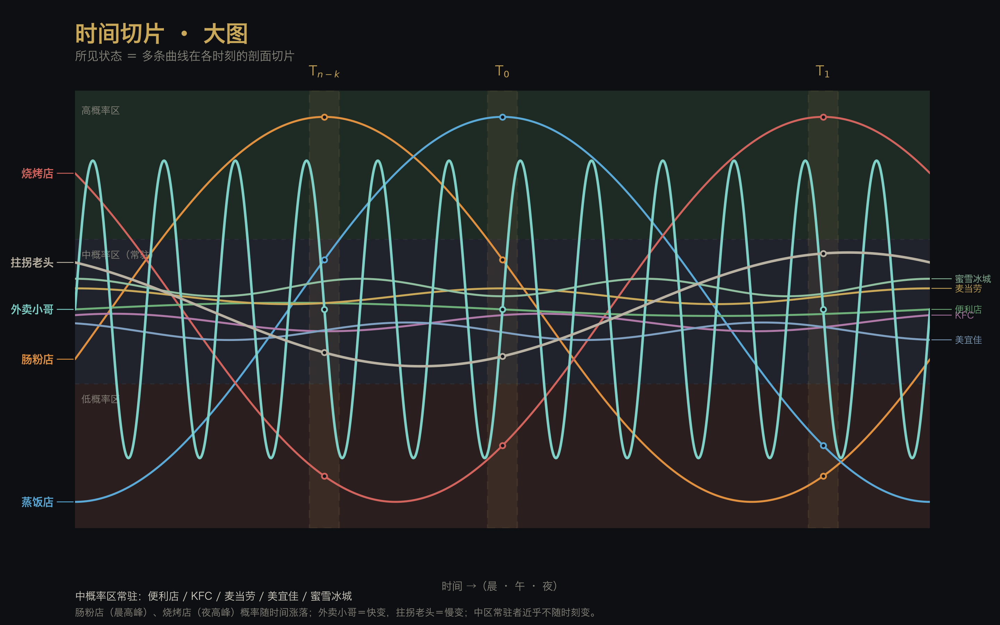

2026-10-01 · 时间切片 · 大图
缘起：主人 1001 设想（据与 ima-Lola 的讨论），把《多线切片》
time-slice-of-status扩成一张大图。 本篇先立骨架，后续再迭代。

一 · 图上有什么
① 概率区（高 / 中 / 低） 整幅分三条横带——高概率区 · 中概率区 · 低概率区（虚线为界）。每一片 slice 都贯穿三区， 故「切片」看的是每条曲线此刻切在哪一区。
② 三片 slice Tₙ₋ₖ（晨）· T₀（午）· T₁（夜） —— 金色虚线带，交点以小圈标出。
③ 摊的涨落（曲线细化，跨区可见）
| 曲线 | 色 | 动态 |
|---|---|---|
| 肠粉店 | 橙 | 晨高峰 → 夜低谷 |
| 蒸饭店 | 蓝 | 午高峰 |
| 烧烤店 | 红 | 夜高峰 → 晨低谷 |
④ 中概率区常驻（右端聚成一束，近乎不随时刻变） 便利店 · KFC · 麦当劳 · 美宜佳 · 蜜雪冰城
⑤ 人物入场
| 人 | 色 | 动态 |
|---|---|---|
| 外卖小哥 | 青 | 快变（周期 ≈ 2h 的高频曲线） |
| 拄拐老头 | 灰 | 慢变（一条极缓的漂移线） |
二 · 与碑的对榫
- 切片联合律：每片给的不是一组标量，而是各曲线在该片落入高/中/低区的整张分布。
- 概念空间线性组合律：该片所见 ＝ 诸曲线（概念空间）按其概率加权的线性组合。
- 先验-后验袜对 / 多线切片：同一批曲线，隔一片，就是另一组权重——同一条轨迹的两片。
- 中区常驻＝不变轴（无斜率者＝度量他者的尺）。
三 · 文件
- 图：
docs/figs/time-slice-of-status-big-{zh-dark,en-dark,en-light}.{svg,png} - 生成器：
scripts/fig_time_slice_big.py（可重烤） - 前身：
time-slice-of-status（《2026-09-30 · 先验与后验是一双袜子，时间是路标》）
四 · 候迭代（后续）
- 曲线细化：三摊加真实形态（非纯余弦）；中区常驻者加各自的微结构。
- 人物再入：外卖小哥可加「订单脉冲」；老头可加「停顿段」。
- 概率区可加数值刻度（高/中/低阈值），或改为每片独立的密度。
- 与 Blender 大图（
time-slice-3d-concept）合流之可能。